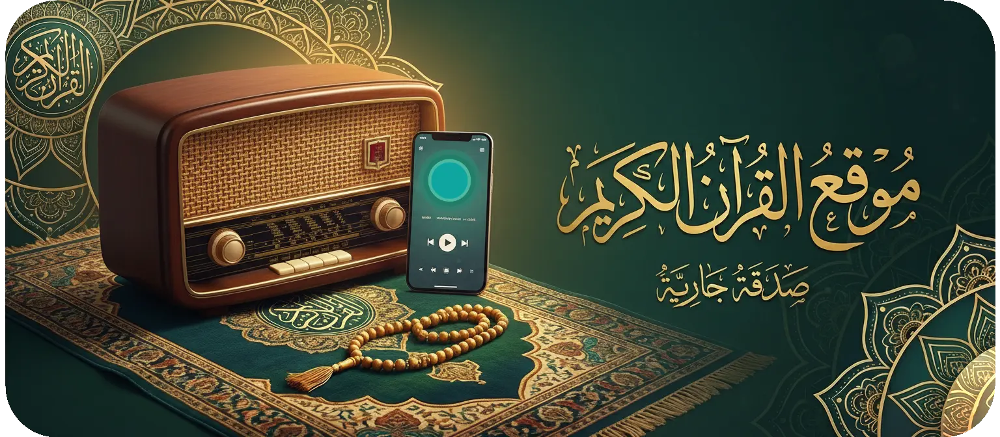

🌙
🏠
☰
❌
🔊 استمع للقرآن
📜 إقرأ القرآن
🕌 أقم صلاتك
🛡️ الرقية الشرعية
📻 الراديو
ℹ️ عن الموقع

محطات راديو القرآن الكريم
استمع مباشرة إلى إذاعات القرآن الكريم
جاري تحميل المحطات...
⏮ السابق
⏸ إيقاف
التالي ⏭